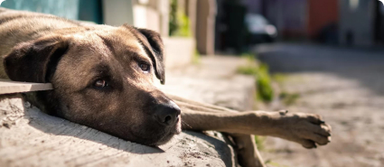
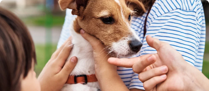
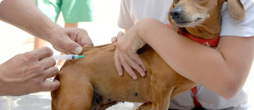
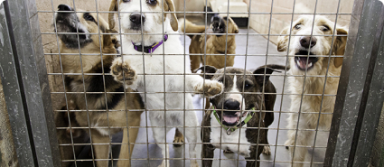

Últimas notícias
Usuário
Data
Postagem
Notificação

Abandono
Vários cães em situações precárias, no bairro Dunas

Adoção
Adoção de pets aumenta gradativamente, nos últimos meses

Vacina
No próximo ano vão disponibilizar vacinas de graça para gatos de pequeno a médio porte.

ONG’s
Número de ONG’s para abrigar animais em situações precárias, aumentam gradativamente em Pelotas-RS